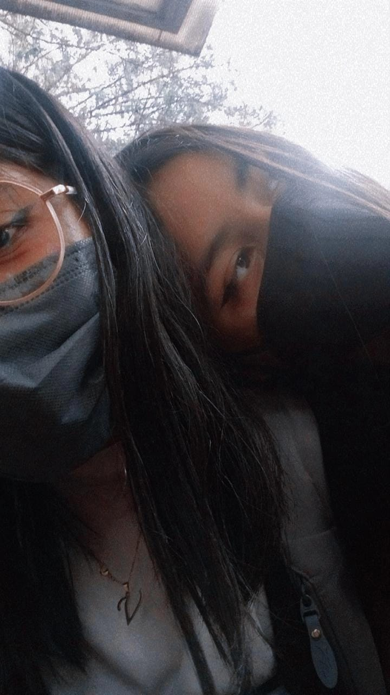

No bueno ese Viernes se nos ocurrió jugar Verdad o Reto, se fueron con todo contigo y les valía que tuvieras novio pero tu sabias que siempre te cubriré en todo y siempre podrás contar conmigo, si era reto siempre te ponían que te besaras con el Ulises pero bien que los disfrutabas JAJAJAJA, otra locura que paso fue cuando nos organizamos este Ulises, Andrés tu y yo para besarnos no’mbre nos pasamos ese día y tu ese día diciendo que besa bien Andrés y si besa muy bien y ahí diciendo que es uno de los que mejores besan jaja, otro día de locuras contigo fue igual un día viernes cuando regrese del Rubens y te besaste con Gonzalo, con Paulina y conmigo, te aprovechaste de mi que andaba un poco tomada y no fue una vez si no varias fue injusto te aprovechaste de mi y eso no se vale jaja, y luego con Gonzalo bien que te lo besaste y me decías yo me bese con el para que no te lastime tu Brackets quien te viera he, pero bueno sabes que siempre te cubriré en todo y siempre estaré para ti, otra cosa que también nos paso fue cuando el profesor de trigonometría no nos dejo entrar a su clase solo porque había pasado un minuto de lo acordado y nosotras bien tristes porque no nos dejo entrar, pero ya luego se nos paso y nada mas nos reíamos por que nos dejo afuera hasta para no dejarnos entrar a una clase tuvo que ser juntas, hemos pasado por muchas locuras juntas y espero que pasemos por mas locuras juntas, siempre estaremos la una a la otra nunca olvides que siempre podrás confiar en mi y siempre estaré aquí para ti, no olvidare cada locura que pase contigo a tu lado, espero seguir viviendo locuras a tu lado pero lo creo imposible por que vamos a ir a diferentes carreras creo, pero quiero que sepas que siempre estare a tu lado, quiero desearte mucha suerte en todo, no olvidare nada ti, te quiero.